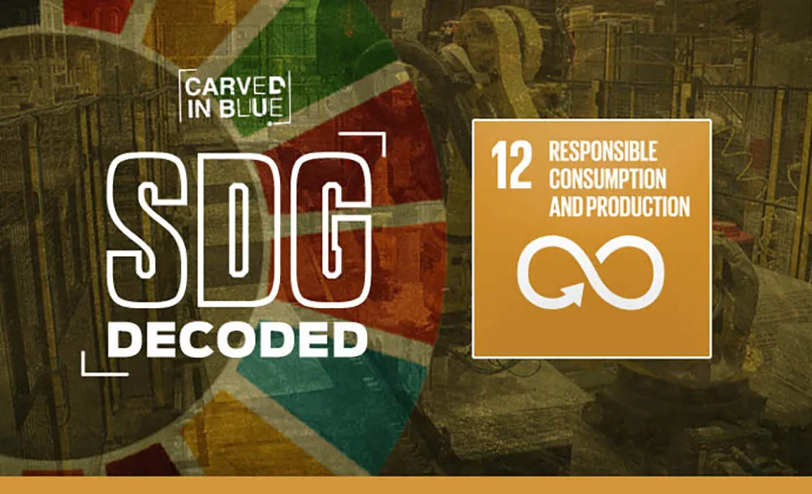

17 Sustainable Development Goals (SDGs) were adopted by the United Nations in 2015 for setting
the agenda for 2030. They were created with the aim of "peace and prosperity for people and the
planet...".They state that ending poverty and other deprivations, goes alongside strategies that
improve health and education, reduce inequality, and increase economic growth - while tackling
climate change and working to preserve oceans and forests. The SDGs emphasize the interconnected
environmental, social and economic aspects of sustainable development by putting sustainability
at their center
What is SDG 12 (Responsible Consumption and Production):
SDG12 stands for Sustainable Development Goal 12, which is part of the United Nations' 2030
Agenda for Sustainable Development. SDG12 is focused on ensuring sustainable consumption and
production patterns. Its aim is to promote efficiency in resource use, reduce waste generation,
and encourage sustainable practices throughout the entire lifecycle of products. This goal
emphasizes the importance of addressing unsustainable consumption and production patterns, which
are critical for achieving sustainable development globally.

Indian Companies which have adopted different methods to contribute to SDG 12 are:
1. Saint-Gobain India: Saint-Gobain is a global leader in building materials and construction
solutions. Saint-Gobain India, with its manufacturing facilities in Chennai, has been committed
to sustainability and has adopted various initiatives aligned with SDG 12. The company
emphasizes resource efficiency, waste reduction, and green building solutions to promote
sustainable consumption and production in the construction sector.
2. TVS Motors: TVS Motor Company has been proactive in developing and promoting
eco-friendly mobility solutions. The company has introduced electric and hybrid vehicles to its
product lineup, contributing to the reduction of greenhouse gas emissions and promoting
sustainable transportation.
3. ITC Limited: ITC has set ambitious targets for reducing water consumption, carbon
emissions, and waste generation across its manufacturing units.
Conclusion:
It's crucial for each of us to play a part in making the world a better place through
sustainable development efforts. This involves taking practical steps to safeguard our
environment and enhance the well-being of people worldwide. By embracing sustainable practices
in our daily lives and advocating for policies that prioritize the long-term health of our
planet, we can contribute to positive change. From conserving resources and reducing waste to
supporting renewable energy and promoting social equity, there are countless ways we can make a
difference. Together, through collaboration and collective action, we can build a more
sustainable and resilient future for all.